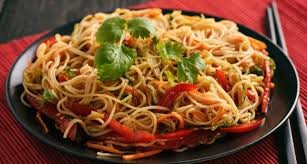

Home
Summer Pasta Salad

This is a summer noodle salad that my mom makes. It's even better the day after.
Ingredients
- 1 (8 ounce) package dried rice noodles
- 1 tablespoon olive oil
- ¼ head romaine lettuce, chopped
- ¼ red bell pepper, diced
- ¼ cup chopped red onion
- 3 green onions, chopped
- ¼ cucumber, diced
- 2 tablespoons chopped fresh basil, or to taste
- 2 tablespoons chopped fresh cilantro, or to taste
- 1 (1 inch) piece fresh ginger root, minced
- ¼ jalapeno pepper, seeded and minced
- 2 cloves garlic, minced
Sauce
- ⅓ cup olive oil
- ¼ cup rice vinegar
- ¼ cup soy sauce
- ¼ cup white sugar
- 1 lemon, juiced
- 1 lime, juiced
- 1 teaspoon salt
- ¼ teaspoon ground turmeric
- ¼ teaspoon paprika
Steps
- Fill a bowl with boiling water; add rice noodles. Cover bowl and let sit until noodles are softened, about 10 minutes. Drain. Add 1 tablespoon olive oil and toss to coat.
- Mix romaine lettuce, red bell pepper, red onion, green onions, cucumber, basil, cilantro, ginger root, jalapeno pepper, and garlic with rice noodles.
- Whisk 1/3 cup olive oil, rice vinegar, soy sauce, white sugar, lemon juice, lime juice, salt, turmeric, and paprika together in a bowl; pour over rice noodle mixture and toss to coat.